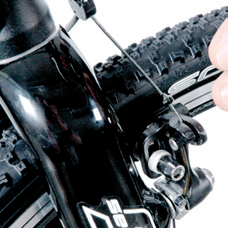
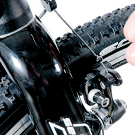

Montage de la roue avant
Quand vous avez préparé la roue avant pour la monter sur la fourche, procédez de la façon suivante, en fonction du type de freins:
Remarque :Quand vous montez la roue avant, faites-vous aider si possible par une deuxième personne ou utilisez un support de montage.
Remarque: Quand vous montez la roue avant, veillez à ce que les pattes de fourche reposent complètement sur l’axe du moyeu!
Attention: Vérifiez que la roue avant tourne librement. Si la roue tourne de façon irrégulière ou que le frein frotte nettement, la roue avant n’a pas été montée correctement!
Remarque: Quand vous montez la roue avant, veillez à ce que les pattes de fourche reposent complètement sur l’axe du moyeu!
 

Attention: Vérifiez que la roue avant tourne librement. Si la roue tourne de façon irrégulière ou que le frein frotte nettement, la roue avant n’a pas été montée correctement!
Fixation de la roue avant sur la fourche
Attention: Veillez à ce que toutes les vis d’arrêt de la potence aient un couple de serrage régulier. L’écart du collier de la potence dit être identique. Sinon, vous risquez d’avoir un grave défaut de matériau au guidon!
Attention: La résistance du mouvement de fermeture du levier de serrage rapide (A) doit augmenter nettement à environ la moitié de la course du levier. Si ce n’est pas le cas, vous devez augmenter la précontrainte à l’aide de l’écrou de serrage (B) placé du côté opposé du moyeu! (voir page 2, Img. 2)